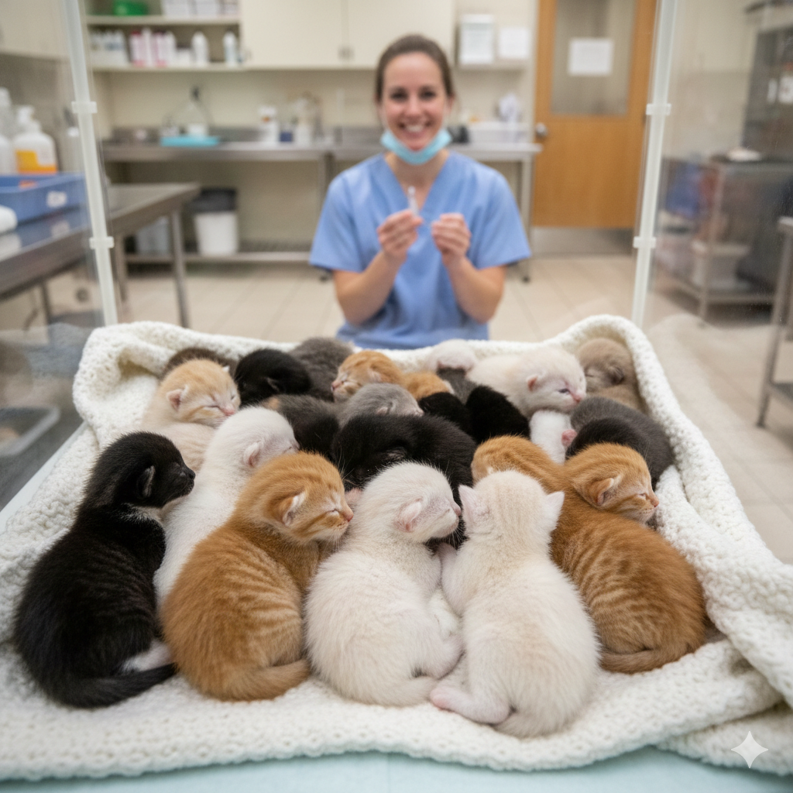
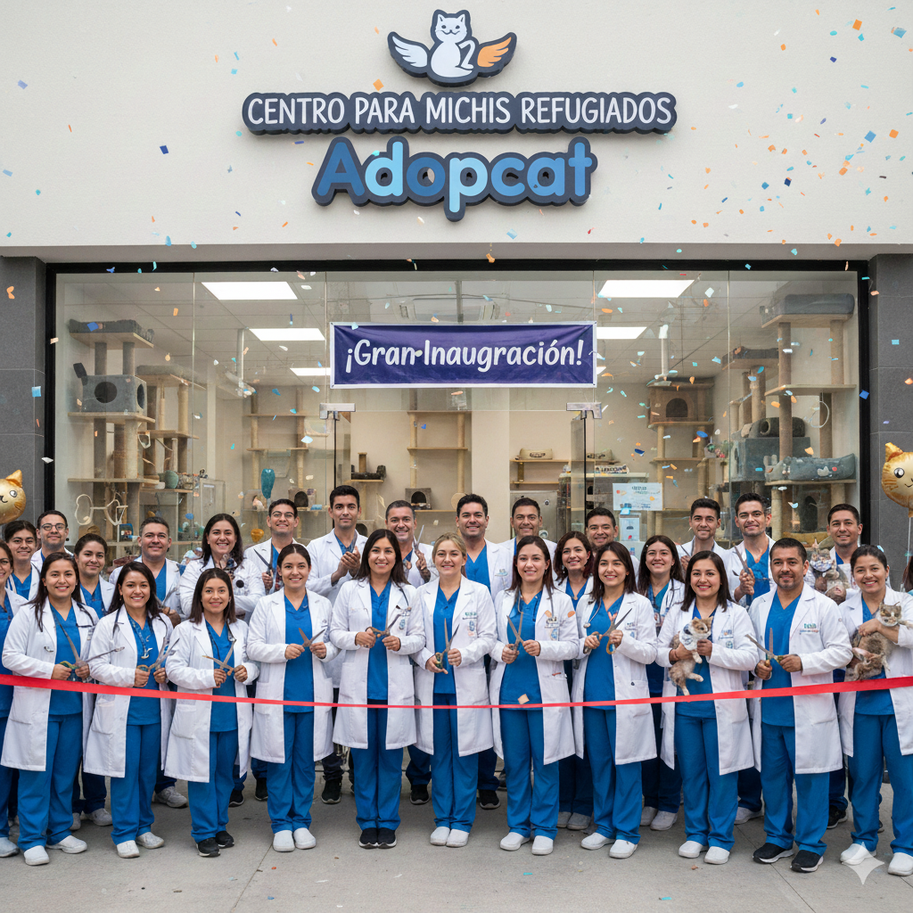
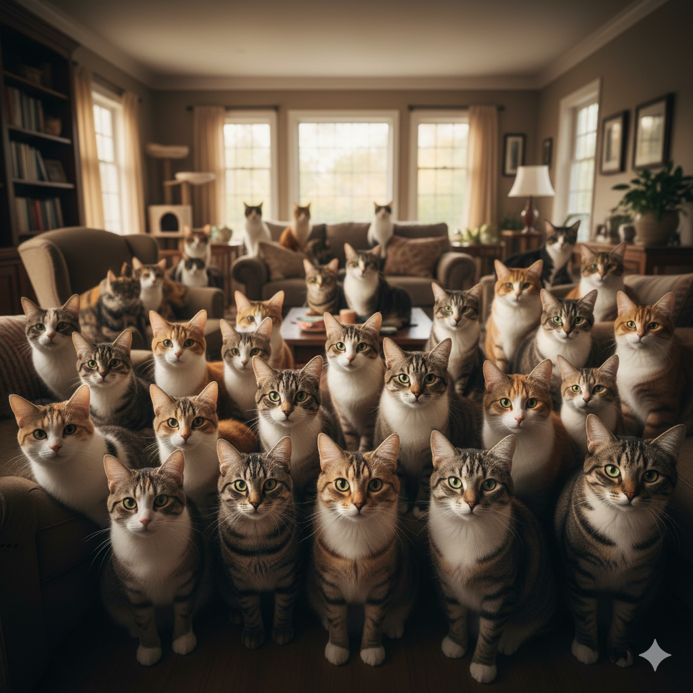

Sobre AdopCat
AdopCat es una organización dedicada a rescatar, cuidar y encontrar hogares amorosos para gatos en situación de calle o abandono. Nuestro objetivo es promover la adopción responsable y el bienestar animal a través de la educación y la concienciación.
Nuestra Misión
Nuestra misión es brindar un refugio seguro para los gatos necesitados, proporcionarles atención médica adecuada y encontrarles familias responsables que les ofrezcan un hogar lleno de amor y cuidado.
Nuestro Equipo
Contamos con un equipo de voluntarios apasionados por el bienestar animal, incluyendo veterinarios, cuidadores y amantes de los gatos que trabajan incansablemente para garantizar que cada gato reciba la atención que merece.
Nuestros Logros
Desde nuestra fundación en 2015, hemos logrado rescatar y reubicar a más de 500 gatos, gracias al apoyo de nuestra comunidad y a la dedicación de nuestro equipo, conformado por más de 30 voluntarios y amantes de los gatos.
Cómo Puedes Ayudar
Hay muchas formas en las que puedes apoyar nuestra causa: adoptando un gato, siendo voluntario, donando recursos o simplemente ayudándonos a correr la voz sobre la importancia de la adopción responsable.
Si tienes intenciones de donar para la causa, estamos eternamente agradecidos con tu ayuda. Puedes consultar los medios de pago mandándonos un mensaje directo de Instagram.
